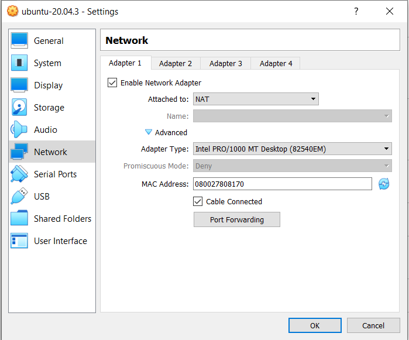

Preparing the server¶
Basic Requirements¶
You should be running a linux ubuntu server on your machine or on a virtual box¶
Ensure that you have set your unique login username and unique password
Start the server and login
Install make dependency¶
This will install make on your machine or virtual box server
sudo apt install make # version 4.2.1-1.2
Install docker-compose¶
This will install docker-compose on your machine or virtual box server
sudo apt install docker-compose
Run apt install¶
This will run apt install
apt install \
ca-certificates \
curl \
gnup \
lsb-release
Download docker¶
This will download docker
curl -fsSL https://download.docker.com/linux/ubuntu/gpg | sudo gpg --dearmor -o /usr/share/keyrings/docker-archive-keyring.gpg
On the next prompt line:
echo \
"deb [arch=$(dpkg --print-architecture) signed-by=/usr/share/keyrings/docker-archive-keyring.gpg]https:download.docker.com/linux/ubuntu \
$(lsb_release -cs) stable" | sudo tee /etc/apt/sources.list.d/docker.list > /dev/null
Run apt update:
sudo apt-get update
Check if installation was successful¶
This will check if installation of docker was successful
sudo docker run hello-world
Ensure that docker daemon is running on local host¶
This will ensure that the docker daemon is running
sudo systemctl daemon-reload
sudo systemctl start docker
sudo usermod -a -G $USER
sudo systemctl enable docker
Restart the server
The docker daemon should be running now
Clone rir-dashboard repository to your machine¶
This will clone the rir-dashboard rpository to your machine or virtual box
git clone https://github.com/kartoza/rir-dashboard.git
Set up server¶
This will set up the rir-dashboard server on your machine or virtual box
cd rir-dashboard
cd deployment
ls
cp docker-compose.override.template.yml docker-compose.override.yml
cp .template.env .env
ls
cd ..
make up
docker ps
docker logs -f rir_dashboard_django
Open server if using a linux machine¶
This will open the dashboard on a webpage:
Open up a web browser and go to 127.0.0.1 and the dashboard will open:

If using a virtual box¶
Open network settings of your virtual box

Click on port forwarding and add 2 new rules as indicated in the image below:

Click OK and close. Download PuTTY. Create a connection by following these directions, enter “localhost” as the host name, “SSH” as the protocol, and “2222” as the port.
Once you have logged in on PuTTY enter this command below in the prompt:
ssh yourlogin@127.0.0.1 -p 22
(Make sure that you replace your username with “yourlogin”)
When asked for your password, press enter three times and the prompt will display this message: Permission denied (publickey,password).
Open the RIR dashboard server using a web browser on your machine by going to 127.0.0.1:8080

Signing in¶
Click on Sign in and for username and password type admin
Change your password on the Django admin page
Currently the dashboard is just a template and the working RIR Dashboard has not been setup yet